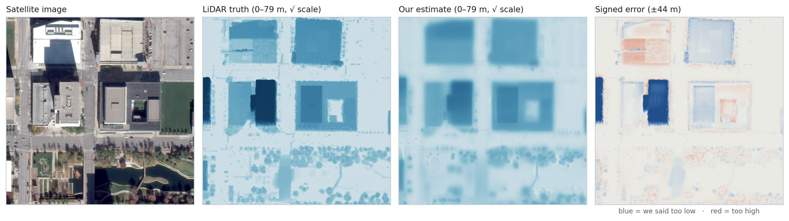
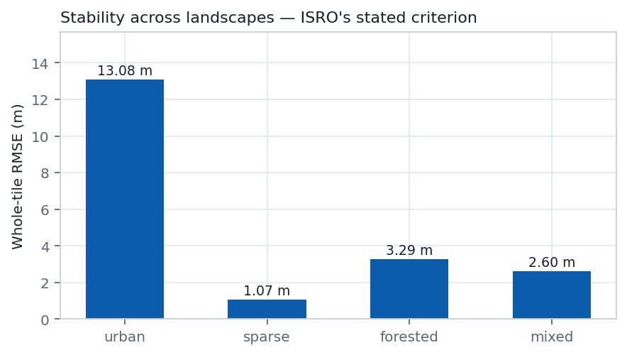
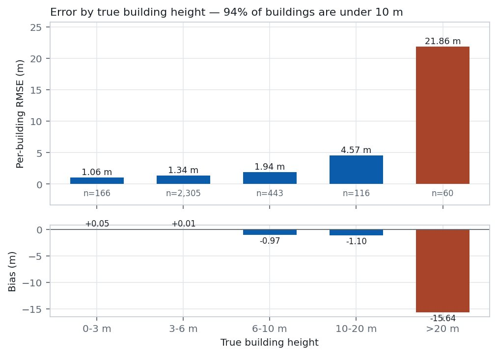
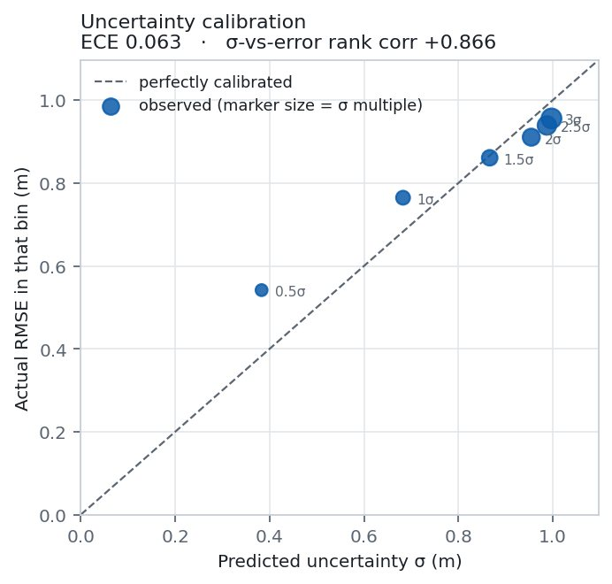
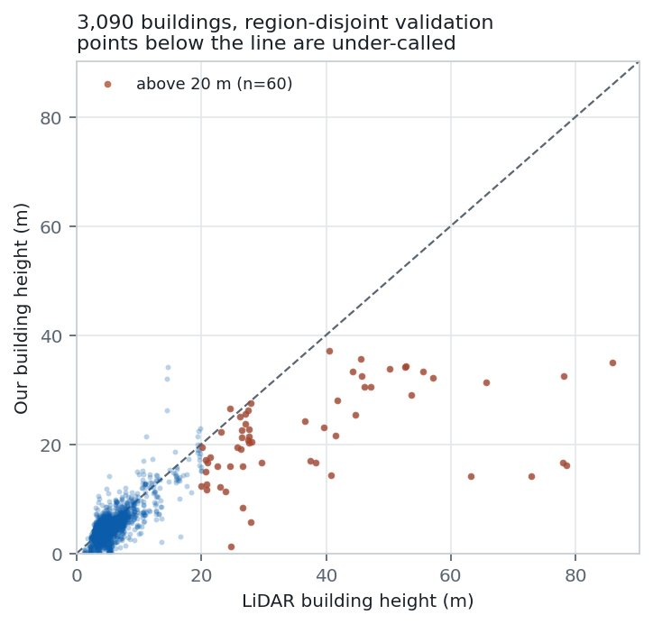
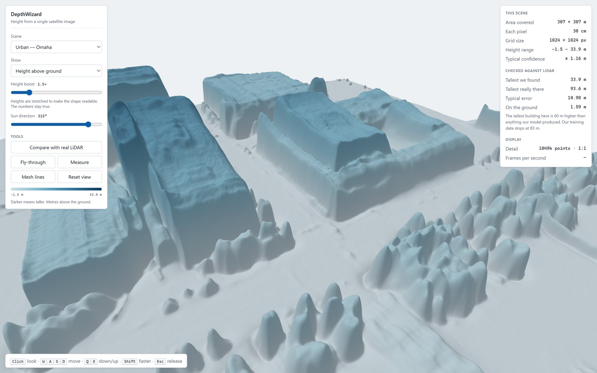
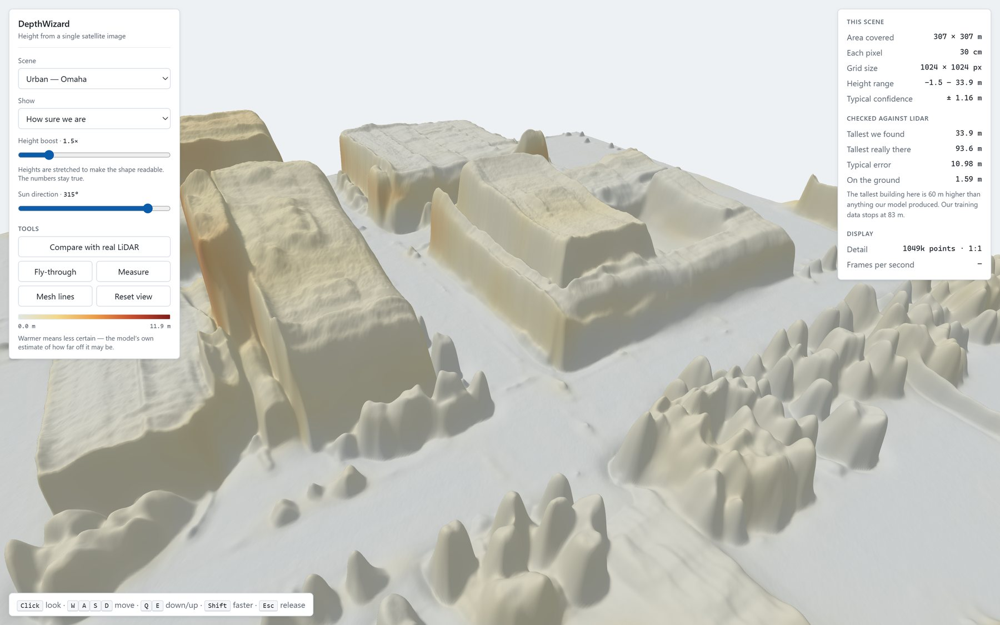
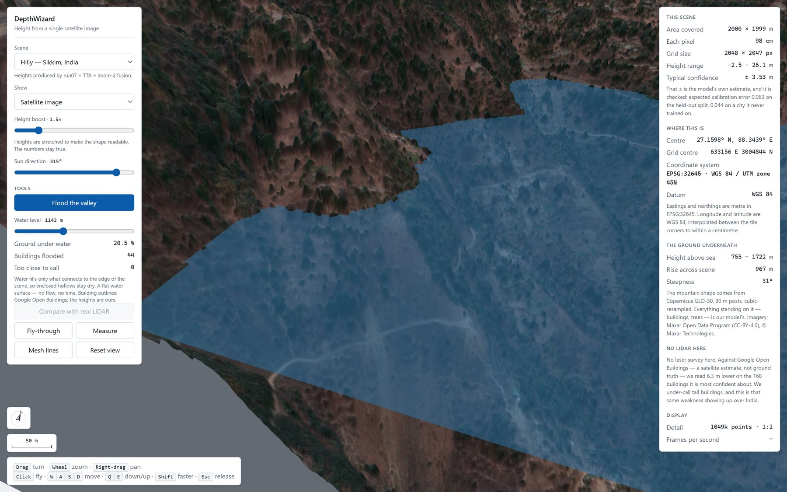
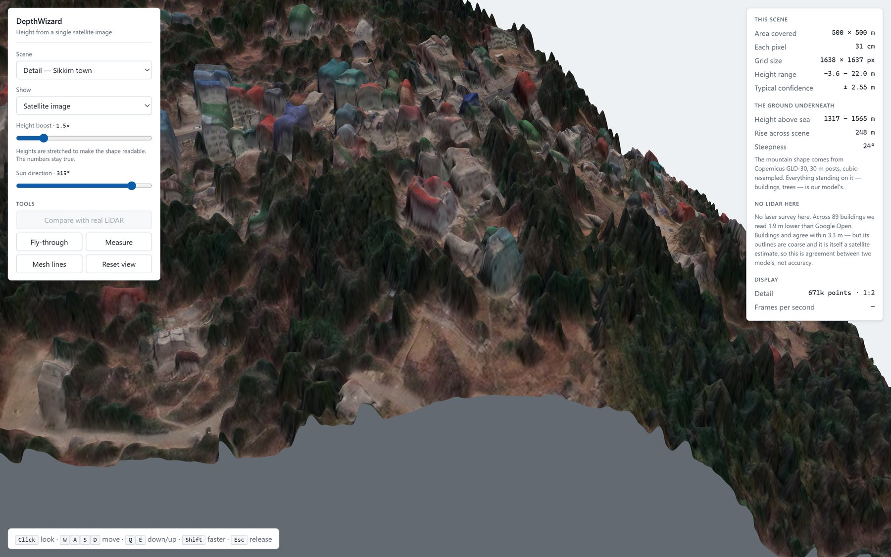

DEPTHWIZARD
One satellite image in, a measurable 3D surface out.
What DepthWizard is
An end-to-end system that estimates the height of every pixel in a single optical satellite image, says how sure it is, and turns the result into a 3D scene you can fly through and measure.
Height from space normally needs a stereo pair, LiDAR or radar interferometry: a second sensor, a second pass, or an aircraft. None of these can be flown into the past, so decades of single-view archive imagery carry no height at all. DepthWizard works from the one image you already have.
One image
A GeoTIFF with coordinates, or a plain PNG / JPG with none. Resolution is read from the file and normalised automatically.
Height + confidence
A digital surface model in a standard geospatial format, and beside every height a per-pixel uncertainty (σ) in metres.
A 3D scene
A browser flythrough with measuring, flood, compare-against-LiDAR and error-map tools. It also ships as one HTML file that opens offline.
How to read this page. Every number here is measured on the configuration we actually ship (called run07, with test-time augmentation and resolution fusion) and traces to a file in the repository. Where a claim failed, it says so. The per-section sources are in the docs folder.
What ISRO asked for
Problem statement SIH26175, from the Indian Space Research Organisation, asks for a pipeline that turns single-view optical RGB remote-sensing images into high-precision elevation maps, then projects the image onto a navigable 3D terrain.
“Accurate Digital Elevation Models (DEMs) and Digital Surface Models (DSMs) are fundamental to urban planning, disaster management, and military reconnaissance. Traditionally, elevation data is acquired through stereo-imaging pairs, LiDAR, or Interferometric Synthetic Aperture Radar (InSAR). These approaches can be cost-prohibitive, dependent on specific sensor availability, and computationally intensive.”
— SIH26175 background, verbatim
The three milestones
How it is scored
| Weight | Criterion |
|---|---|
| 50% | DSM accuracy and validation — RMSE, MAE and correlation against LiDAR, including stability across urban, sparse, hilly and forested landscapes. |
| 50% | Visualisation — projection accuracy, visual fidelity, navigability, interface, stability and standalone deployment. |
Two things in that brief shaped everything. First, “stable across landscapes”: one flattering average would not answer it, so every result below is broken down by terrain. Second, half the marks are the front end, so the viewer is treated as a product, not a demo.
Why it is hard
- Depth models see the world from the ground. Foundation models are trained on everyday photos and predict relative depth. Looking straight down from orbit, they get shapes but not metres.
- One image is ambiguous. Many 3D scenes produce the same picture, so a single height number implies a certainty the model does not have.
- Tall buildings are rare. In our validation set the median building is 4.22 m tall; the few towers dominate the error.
From one image to a checked surface
Heights are regressed in metres above ground. When the input carries coordinates, the ground itself comes from Copernicus GLO-30, and the two together give an absolute surface model referenced to sea level. When it carries none, the output is a relative surface model, which is the problem statement’s own second branch.

What we trained and tested on
| Dataset | What it is | Role | Licence |
|---|---|---|---|
| DFC2019 Track 1 (US3D) | 2,783 WorldView-3 RGB tiles of 1024×1024 at 0.3 m over Jacksonville and Omaha, each with an airborne-LiDAR height-above-ground map and a class map. 108 regions. | Training and the main validation set | IEEE DataPort, free account |
| GAMUS | ISRO’s recommended dataset. 0.33 m tiles with LiDAR nDSM over Washington DC, Philadelphia and New York. | Second training corpus; a held-out DC block for cross-domain testing | CC-BY-4.0 |
| Maxar Open Data, Sikkim | 0.31 m imagery over the Teesta valley, India, from Maxar’s India-Floods-Oct-2023 event (acquired 14 Mar 2022). | Indian and hilly-terrain demonstration; no LiDAR exists here | CC-BY-4.0, © Maxar Technologies |
| Copernicus GLO-30 | Free 30 m global elevation model. | Absolute-height anchor and the terrain under the Sikkim scenes | Open, no authentication |
| Google Open Buildings 2.5D | Building footprints and heights derived from Sentinel-2 at about 4 m effective resolution. | A cross-check over India, never used as truth; building outlines for the flood tool | Open |
DFC2019: the details that mattered
- The tiles carry no georeferencing. The coordinate system is stripped and the resolution is not stored, so it is passed explicitly as 0.3 m. This is why the DFC demo scenes cannot show sea level, and say so.
- Crops are 518 px, not 256. 518 = 14 × 37 is the backbone’s native size; a 256 crop silently comes back as 252. A stride of 506 tiles each 1024 image exactly 2×2 with 12 px overlap, and labels are never resampled.
- The split is region-disjoint: 76 train / 16 validation / 16 test regions, seed 1337. A random tile split leaks, because neighbouring tiles share buildings, lighting and architecture.
- Tall buildings are scarce. Training holds 166 buildings above 30 m, the tallest 82.8 m. Validation reaches 155.3 m.
- The test split is held back and is not scored until the very end. It is also easier: it contains exactly one building above 30 m, which will flatter any number quoted from it.
GAMUS: what was usable
- 8,724 height tiles ship, but only 6,557 have imagery. All 2,167 New York tiles are height-only and cannot train an image model.
- Voids are a −5 sentinel value, not NaN, and class 3 is building while class 6 is tree. Both would silently corrupt training if read naively.
- GAMUS’s own splits leak spatially (we counted 900 adjacent test/train pairs), so we made our own: DC grid columns 2–48 train, column 49 discarded as a 338 m buffer, columns 50–67 held out (317 tiles).
- 6,204 tiles were streamed download → shard → delete into 192 training shards, alongside DFC2019’s 61. GAMUS carries roughly 36× DFC2019’s supply of buildings above 20 m.
No Indian LiDAR exists in any open dataset. Everything over India is therefore reported as agreement with another model (Google Open Buildings), not as accuracy. See Results over India.
The network and how it learns
Backbone
Depth Anything V2 Small: a ViT encoder with a DPT decoder, 24.8 M parameters, Apache-2.0. The Base and Large variants are CC-BY-NC and could not go into a deliverable. The problem statement asks for a pre-trained monocular depth backbone; used zero-shot on satellite images it correlates with height (r ≈ 0.43) but compresses the range. Fine-tuning on metric LiDAR labels is what fixes that.
A twin head: height and uncertainty
The decoder ends in two outputs per pixel: the height μ, and a log-variance that becomes σ. The mean branch reuses the pretrained final convolution; the variance branch is a new zero-initialised 1×1 convolution. Output is scaled by the training set’s 95th-percentile height (13.22 m) so the network works in a sensible range.
Loss
- Heteroscedastic Gaussian negative log-likelihood: ½(log σ² + (y − μ)² / σ²), with the log-variance clamped to [−7, 7]. The model is rewarded for being confident only where it is right.
- β-NLL (Seitzer et al., 2022) at β = 0.5, which stops plain NLL from learning to ignore hard pixels by inflating their σ.
- Gradient matching at weight 0.5 to keep edges, and 200 steps of plain MSE warm-up.
Training set-up
| Setting | Value |
|---|---|
| Optimiser | AdamW (0.9, 0.999), weight decay 0.01 |
| Learning rate | backbone 5e-6, head 50× that; 5% linear warm-up, then linear decay |
| Batch | 8 crops of 518×518, gradient clip 1.0, seed 1337 |
| Precision | bf16 on Ampere |
| Augmentation | the 8 flips and rotations (D4), brightness and contrast ±0.2, gamma ±0.15, Gaussian noise 0.01 |
| Hardware | one consumer RTX 3060, 12 GB |
Keeping a consumer GPU alive. Unmanaged, the RTX 3060 reached 91 °C and throttled itself. A fan curve plus a temperature-first power limit held it at a mean of 80 °C, and train.py carries its own thermal governor as a backstop that pauses training above 87 °C. The shipped model’s final training stage peaked at 83 °C with no pauses.
Every run, including the ones that failed
Whole-tile RMSE is scored on the same 80 validation tiles throughout. Lower is better. Per-building RMSE is the headline metric (see How we evaluate).
| Run | What changed | Whole-tile | Per-building | ECE | Outcome |
|---|---|---|---|---|---|
| Zero-shot | Depth Anything V2 untouched, with the best single global scale-and-offset (the deployable baseline) | 9.308 m | — | — | The bar to beat |
| run01 | Regression head, NLL + gradient matching, β = 0 | 6.811 m | — | 0.163 | Stopped after epoch 5. Diagnosed: plain NLL let the model give up on buildings |
| run02 | Same recipe with β-NLL (β = 0.5); 12 epochs, 11,532 steps, ~130 min | 6.454 m | 3.771 m | 0.083 | Best single-dataset model. 30.7% better than zero-shot |
| run03 | Binned head: 128 bins over −3 to 120 m, soft-argmax | 6.950 m | 4.050 m | 0.106 | Negative. Crop-wise validation called it the winner; whole-tile called it the loser |
| run04 | Bins + the head-tail cut from HTC-DC Net, re-implemented from the paper | 7.031 m | 3.991 m | 0.048 | Negative on accuracy, best calibration |
| run05 | A 335 M-parameter backbone (DA V1-Large) on a Kaggle GPU | void | Never learned. Traced to an initialisation bug: the starting error was 666 m, and NLL shrank the gradient to the height output about 1,100-fold. Fixed with a constant initialisation | ||
| run06 | The large backbone again, with the fix | — | Did not complete (the local attempt ran out of host memory in data loading). No result is claimed | ||
| Pilot | 1,500 steps on DFC2019 + GAMUS, warm-started from run02 | passed 7 of 7 gates | Written go/no-go gates before the full run | ||
| run07 | DFC2019 + GAMUS union (76% GAMUS), 14,000 steps warm-started from run02, 75.5 min on the RTX 3060 | 6.008 m | 3.464 m | 0.063 | Ships. Better on both datasets |
run01–run04 figures are single-pass; run07’s are the shipped configuration (8-way test-time augmentation + resolution fusion). On that same shipped protocol run02 scores 6.401 m / 3.667 m, which is the fair comparison for run07.
Three decisions the journal records
The simplest head won
Regression, binned and head-tail-cut heads all compress heights to the same 0.43–0.49 slope. No head fixes the tall-building problem, so the simplest ships.
Crop scores lie
Scoring 518 px crops differs from whole-tile scoring by ~1.5 m on the same checkpoint, and picked the wrong winner three times. Whole tiles only, from then on.
Predict first
From 27 Aug: write the prediction and what would falsify it, probe cheaply, then decide. The GAMUS run’s criteria were written before it started, and one was failed.
Choices that make our numbers look worse, on purpose
Whole tiles, not crops
Every score runs the full sliding-window inference over whole 1024×1024 tiles, the way the product runs. Crop-wise scoring removes tile-edge context and flatters.
Per building, measured the way the field does
Per-pixel building error is dominated by roof edges, where the prediction crosses from ground to roof and is briefly wrong by the whole building’s height. It is not comparable to any published figure. The field reports one height per building, so we do too: buildings are the connected components of the building class (at least 25 m²), and each gets the median height on both sides. Using a higher percentile of ours against the truth’s median would manufacture accuracy; we measured that at +1.3 m when we made the mistake.
What is reported
- RMSE, MAE, bias and correlation, overall, per class (ground, vegetation, building, water, bridge) and per terrain (urban, sparse, forested, mixed).
- Per-building error by true-height band, so the tall-building tail cannot hide in an average.
- Calibration of σ: expected calibration error, coverage at each σ multiple, and the rank correlation between σ and actual error.
- Significance by paired bootstrap over the same buildings (20,000 resamples) whenever two models are compared.
Pre-registration
Before the GAMUS run, the pass/fail criteria were written down and committed. The run was then scored against them as written:
| Criterion | Bar | run07 | Result |
|---|---|---|---|
| Primary: bias on buildings > 20 m | better than −13 m | −15.64 m | Not met |
| 3–6 m band must not degrade | ≤ +0.3 m | 1.363 m (was 1.429) | Met |
| Whole-tile RMSE | ≤ 6.401 m | 6.008 m | Met |
| Per-building RMSE | ≤ 3.667 m | 3.464 m | Met |
| Calibration (ECE) | ≤ 0.083 | 0.063 | Met |
The primary criterion failed and is reported as failed, everywhere we quote the result.
How accurate it is
| Per building (3,090) | Value |
|---|---|
| RMSE | 3.464 m |
| MAE | 1.416 m |
| Median absolute error | 0.840 m |
| Bias | −0.474 m |
| Correlation | +0.809 |
| Whole tile (11,983,760 px) | Value |
|---|---|
| RMSE | 6.008 m |
| MAE | 1.681 m |
| Median absolute error | 0.280 m |
| Correlation | +0.843 |
| Ground-class RMSE | 1.542 m |
For scale: the median validation building is 4.22 m tall and the 90th percentile is 7.53 m. The external bar is GlobalBuildingAtlas (ESSD 2025), which publishes 5.9 m per-building RMSE over Asia; we are 41% below it, on US data with LiDAR truth.
Across the four landscapes

| Landscape | RMSE | MAE | r |
|---|---|---|---|
| Sparse | 1.074 m | 0.338 m | +0.844 |
| Mixed | 2.600 m | 1.324 m | +0.840 |
| Forested | 3.286 m | 2.299 m | +0.779 |
| Urban | 13.084 m | 4.610 m | +0.838 |
Urban is 4–12× the others for one specific reason: cities are where the buildings above 20 m are. Correlation stays at +0.838, so the shape is right and the scale of tall structures is not. Hilly terrain is missing from this table because DFC2019 has no hills; it is covered by Sikkim, below, as a cross-check.
Where the error lives

Does it know when it is wrong?

The rank correlation is the operational number: where the model says it is unsure, it is wrong, monotonically. That makes the uncertainty usable for triage, and it drives the viewer’s confidence layer and the flood tool’s “too close to call” count.
Another city, another sensor
| Trained on | DFC2019 val (80 tiles) | GAMUS DC holdout (317 tiles) |
|---|---|---|
| DFC2019 only (run02) | 6.401 m (3.667 m), ECE 0.077 | 6.873 m (2.725 m), ECE 0.231 |
| DFC2019 + GAMUS (run07) | 6.008 m (3.464 m), ECE 0.063 | 3.497 m (1.788 m), ECE 0.044 |
Whole-tile RMSE, per-building in brackets. Read this carefully: run07 trained on GAMUS, so the DC column is domain adaptation, not a generalisation win. The defensible claim is the conjunction: it adapted to a second dataset and improved on the first. run02’s uncertainty is well calibrated in domain (0.077) and badly off it (0.231), which is the correct direction for it to fail.
Over India, where there is no LiDAR
Our Indian scene (Sikkim) is compared against Google Open Buildings, itself a satellite model at about 4 m effective resolution. On the 168 footprints it is most confident about, we read 6.28 m lower. That is agreement between two models, not accuracy, and it is consistent with our known tall-building under-call in a dense hill town. Terrain leakage was tested and ruled out: on 31° slopes the correlation between predicted height and slope is −0.044.
At ISRO’s evaluation resolution: 0.6 m
ISRO’s FAQ (22 Sep 2026) fixes final evaluation at Cartosat-2S, 0.6 m, twice as coarse as our 0.3 m training data. --auto-zoom reads the resolution from a GeoTIFF and upsamples so the model sees its trained scale. We re-measured this on the shipped model, with the criteria written down before the run (probe 05b): the same 80 held-out tiles and shipped configuration as the headline number, with 0.6 m simulated by downsampling.
| Input | Per building | Buildings ≤ 20 m | Whole tile |
|---|---|---|---|
| 0.3 m, native | 3.464 m | 1.667 m | 6.008 m |
| 0.6 m, untreated | 4.185 m (+20.8%) | 2.090 m | 6.738 m |
| 0.6 m, auto-zoom | 3.999 m (+15.4%) | 2.095 m | 6.494 m |
A prediction we failed, and a number we retract. We pre-registered that auto-zoom would hold the 0.6 m cost under 10%. It costs 15.4%. An earlier figure, “within 3.6% of native”, came from the older run02 model on three hand-picked tiles, and does not hold for the model we ship. Auto-zoom’s gain is all on tall buildings: on buildings up to 20 m it does not help, and both 0.6 m conditions cost about 25%. Simulating 0.6 m by downsampling measures the resolution gap only, not differences in the Cartosat sensor. Closing this gap is the first item after submission.
Limitations, stated plainly

- Tall buildings are under-called. Above 20 m the average under-call is 15.6 m. Adding GAMUS improved this significantly (from 17.2 m, p = 0.0002), but short of the −13 m we pre-registered. The limit is now the data: no open dataset at this resolution contains buildings above ~50 m.
- The improvement cost a little bias. Overall per-building bias moved from −0.24 to −0.47 m. It was a deliberate bias-for-variance trade, because per-building RMSE improved.
- Forested ground carries 2.5 m of error (vs 0.61 m on open ground) because LiDAR sees through canopy and a camera cannot.
- Tile borders are worse, about double the interior RMSE; a known property of patch-based transformers.
- The absolute anchor is itself a surface model. GLO-30 includes buildings and canopy, so dense urban composites double-count part of the building height.
- ISRO’s 0.6 m imagery costs 15.4% per building even with auto-zoom (3.999 m vs 3.464 m), and about 25% on buildings under 20 m. Measured on simulated 0.6 m; see 0.6 m results.
- No Indian LiDAR, so everything over India is agreement, not accuracy.
- The test split is unscored, by design, until the very end, once.
Turning relative depth into metres
ISRO’s second milestone asks for scale calibration. DepthWizard handles it three ways:
Metric by training
The head regresses metres above ground directly, learned from LiDAR, so no per-image scale fitting is needed to get heights.
DEM anchor
For georeferenced input, Copernicus GLO-30 supplies the ground: DSM = terrain + height above ground, referenced to the EGM2008 geoid. The default in the pipeline since 13 Sep, and on the live site since 25 Sep, because ISRO scores GeoTIFF inputs as an absolute DSM.
Ground control points
With a few known heights, a power-law fit corrects range compression. Over 10 tiles with a tall building, 8 points cut RMSE by 24.9%.
Why a power law and not a straight line. The model’s compression is not linear: it over-calls by 1.20× at 0–3 m and under-calls at 0.52× above 40 m. Across all 57 tiles tested, the power form was the only one that beat doing nothing (−4.4%, where affine was +0.1%). It carries guards: at least two control points in the upper 60% of the height range, and an exponent of at least 0.95. On tiles without enough spread it declines and falls back to an offset only.
What you get back
| Input | Output |
|---|---|
| GeoTIFF with coordinates | Absolute DSM (metres above the geoid), nDSM (height above ground), σ map, the bare-earth anchor, a summary and a readme naming CRS, units, datum and checkpoint |
| PNG / JPG, no coordinates | Relative rDSM and σ map, the problem statement’s own second branch |
Probes and negative results
Each probe states a prediction first and what would falsify it. Negative results are evidence too: they show which levers are spent.
| Probe | Question | Result | Conclusion |
|---|---|---|---|
| 01 Tall buildings | Can training harder on the tall buildings we have move the tail? | Fit improved (10.22 → 8.81 m) but transfer got worse (−18.22 → −19.10 m) | Data scarcity, not architecture. More tall buildings needed, which GAMUS then partly supplied |
| 02 Backbone | Would a bigger backbone see height better? | Zero-shot per-building r: Small +0.351, V1-Base +0.470, V1-Large +0.659 | Motivated run05/06, which did not produce a result |
| 03 Guided filtering | Can post-processing square off blurred roofs? | Every setting was worse (+0.009 to +0.359 m) | The blur is structural; filters cannot create edges never predicted |
| 04 Resolution | Where does roof detail go? | One token covers 4.2 m. Fusing a 2× zoomed pass at σ = 8 gave +29% sharpness for +0.072 m | Shipped as resolution fusion |
| 05 / 05b Input resolution | What does ISRO’s 0.6 m cost? | On run02 and three tiles, auto-zoom looked near-free. Re-measured on the shipped model and 80 tiles: +15.4% per building | Auto-zoom ships; the pre-registered “under 10%” failed. See 0.6 m results |
| 06 Compression | How are heights distorted? | Ours = 0.473 × truth + 2.66 m | A global de-compression moved error without removing it; not shipped |
Also measured and rejected
Ordinal / binned heads
All heads land at a 0.43–0.49 slope. The most likely bin sits only 1.86 m from the average, so no hidden tall mode is being averaged away.
Tail re-weighting (LDS)
Pixels above 20 m are 7.5% of building pixels but already carry 78.8% of squared error. Re-weighting further was ruled out.
Two-model ensemble
The two best models’ errors correlate at 0.925; the best mix gave 3.647 m against 3.616 m. Averaging buys nothing.
Shadow photogrammetry
Even perfect (oracle) shadows reach r 0.503 against the network’s 0.787, so shadows cannot lift the tail.
Half the marks: a viewer that measures
Built on three.js. It is a measuring instrument first: heights travel to the browser as raw float32, never through an 8-bit image, so the metres you read are the metres the model produced.


What you can do
Four surfaces
Satellite drape, height ramp, uncertainty and slope, with height exaggeration and sun direction.
Fly and orbit
Drag to orbit, wheel zoom, right-drag pan, click to fly with WASD, pinch on touch, and an automatic tour.
Measure
Two clicks give ground distance, height difference and slope in metres, with an error bar corrected for how errors correlate with distance.
Compare with LiDAR
Drag a split line across the scene to compare our surface with the truth, plus a “where we’re wrong” error map.
Know where it is
Coordinate system, datum, centre position, cursor position and a north arrow. Scenes without coordinates say so plainly.
Upload your own
Upload an image on the live site and get a scene back. A GeoTIFF returns an absolute DSM, nDSM and σ as GeoTIFF downloads; a PNG or JPG returns a relative DSM.
The flood tool: the disaster use case

On the Indian scene, drag a water level and the viewer shows which ground floods, which buildings go under, and which are too close to call given the model’s own σ.
It runs on absolute elevation (GLO-30 terrain + our heights), not height above ground, because a hut on a ridge does not flood before a tower in a valley. Water fills only what connects to the edge of the scene, so enclosed hollows stay dry. Building outlines come from Google Open Buildings; the heights are ours.
It is a flat-water (“bathtub”) model, with no flow, volume or time, and the interface says so. On the US scenes it switches itself off and explains why: they have no coordinates, so there is no sea level to measure against.

Standalone
The whole viewer, with its demo scenes, also builds into one 15 MB HTML file that opens by double-click from disk, with no server and no network. It was verified by loading it in a headless browser with software rendering: the file contains no <canvas>, and the rendered page has one, which only happens if three.js actually ran.
Runs on a CPU, anywhere
HTTP API
| Endpoint | Does |
|---|---|
POST /api/upload | Accepts a TIF, PNG or JPG and starts a job |
GET /api/job/<id> | Job progress |
GET /api/result/<id>/<kind> | Downloads a result: DSM, nDSM, σ, terrain, summary or readme |
GET /api/capabilities | Upload limits, so a client can check before uploading |
Because one request costs CPU-minutes, the public server enforces limits: 50 MB per upload, an image-area cap derived from measured cost (a 303-megapixel strip fits in 12 MB and would take hours), three jobs in flight, and 20 s between jobs per visitor. Every refusal is immediate and says what to change.
There is no database: outputs are files (GeoTIFF rasters and float32 scene tiles), which is what a GIS workflow expects.
Verified by what it does, not by what it reports
Each harness below was written to check one claim, and each caught at least one real fault.
| Harness | Checks | What it caught |
|---|---|---|
verify_viewer.py | The standalone page actually renders | Its own “fatal panel” check had been passing unconditionally; fixed and proven against a browser with WebGL disabled |
verify_layout.py | The interface fits on four screen sizes | An 889 px panel on a 673 px viewport; 7 layout problems before, 0 after |
verify_controls.py | Mouse and touch controls, checked in pixels | A scale bar stretched to 476 px; an error thrown on every pinch gesture |
verify_geo.py | Displayed coordinates against rasterio | A 330 m position error from applying a transform to a decimated grid |
test_flood.mjs | 7 flood-tool acceptance checks, e.g. enclosed basins stay dry | A re-bake that had silently dropped the building data and disabled the tool |
smoke_deliverable.py | 12 awkward inputs and every entry point’s --help | A truncated PNG rendered as heights over 26% invented black pixels |
verify_upload.py | 23 checks on the upload path, including path traversal, against local or live | Windows file paths leaking into the downloadable summary |
| ONNX parity | Exported model vs PyTorch on 804,972 inputs | Three export defects in the first version |
Numbers we published and then fixed
A project that never corrects itself has not been checking. These were caught by re-measuring, and the originals were replaced:
- “Depth Anything sees albedo, not height.” Measured and found too harsh: zero-shot it correlates r ≈ 0.43 with true height. The problem is range compression, which fine-tuning fixes.
- The error-map building. An early caption said we call a 93.6 m building 31.5 m. That could not be reproduced from any raster; the measured figures are a 72.8 m median building called 14.1 m.
- Sikkim alignment. An automatic co-registration was being applied that had no real correlation peak (0.006). Both models were re-scored without it, on the same footprints.
- Uncertainty at long range. A “68.1%, essentially exact” coverage claim from 3 tiles became 51.7% on 20, and the claim was withdrawn.
- “0.6 m costs 3.6% after auto-zoom.” That was run02 on three hand-picked tiles, single pass. Re-measured on the shipped model and 80 tiles against a pre-registered bar, it is 15.4%, and the claim is withdrawn.
- A significance test on the wrong protocol. The GAMUS bootstrap was re-run on the shipped configuration.
- A warm-start that trained nothing. An early resume path trained zero steps while printing the parent model’s score as its own; caught by audit and replaced before run07.
How the project unfolded
- 26 Aug 2026Plan written; solo vertical-slice build. The slice ran end to end on day one: zero-shot model → GeoTIFF → three.js flythrough. Zero-shot baseline measured (9.308 m).
- 27 Augrun01–run04: regression, β-NLL, binned and head-tail-cut heads. run02 becomes the model to beat. Test-time augmentation, per-building scoring, the Sikkim scene and probe 01 added. Rule adopted: predict in writing before running.
- 28 AugProbes 03–06; range compression measured (0.473 × truth). The large-backbone run05 declared void. Ground-control calibration and CPU export (ONNX, int8) built; standalone viewer verified.
- 29 Augrun05’s cause found (an initialisation bug); pre-flight checks added. Viewer theme and per-building statistics.
- 6–7 SepGAMUS integration planned with pre-registered criteria; NYC found to be height-only. Pilot run passes all 7 gates; run07 launched.
- 8–9 Seprun07 scored: better everywhere, primary criterion failed and recorded as failed. Flood tool, hover readout and scale bar shipped.
- 12 Seprun07 ships and is deployed; six demo scenes re-baked; four published numbers corrected; repository made public (Apache-2.0). Viewer rebuilt for projectors, touch and geolocation.
- 13 SepUpload path hardened; the platform returns an absolute DSM for georeferenced input.
- 22–24 SepISRO publishes an FAQ: final evaluation on Cartosat-2S at 0.6 m, GeoTIFFs scored as an absolute DSM.
- 25 Sep0.6 m re-measured on the shipped model (probe 05b): +15.4%, failing its pre-registered 10% bar. Absolute-DSM output switched on for the live site. Submission deck rebuilt to ISRO’s guidance; this documentation published.
Research, data and licences
Research that shaped the build
- Depth Anything V2 — Yang et al., NeurIPS 2024. The backbone.
- HTC-DC Net — Chen et al., IEEE TGRS 2023. Head-tail cut and distribution constraints; re-implemented and compared as run04.
- Depth Any Canopy — Ouaknine et al., 2024. The fine-tuning recipe for aerial height.
- β-NLL — Seitzer et al., ICLR 2022. Keeps the mean head learning under NLL.
- Heteroscedastic uncertainty — Kendall & Gal, NeurIPS 2017. The twin-head formulation.
- LDS / FDS — Yang et al., ICML 2021. Imbalanced-regression re-weighting; tested and ruled out.
- IM2HEIGHT, TSE-Net — prior single-view height estimation.
- GlobalBuildingAtlas — ESSD 2025. The 5.9 m per-building bar over Asia.
- Guided filter — He, Sun & Tang, ECCV 2010. Probe 03.
Data and credits
- DFC2019 / US3D — IEEE GRSS Data Fusion Contest 2019, via IEEE DataPort. Not redistributed.
- GAMUS — Earthflow, CC-BY-4.0; recommended by ISRO for this problem statement.
- Sikkim imagery — Maxar Open Data Program, CC-BY-4.0, © Maxar Technologies.
- Copernicus GLO-30 — © DLR e.V. 2010–2014 and © Airbus Defence and Space GmbH 2014–2018, provided under COPERNICUS by the European Union and ESA.
- Google Open Buildings 2.5D Temporal — Google Research.
- three.js — MIT licence.
Licence
DepthWizard’s code is released under the Apache-2.0 licence, and so is the Depth Anything V2 Small backbone it fine-tunes.